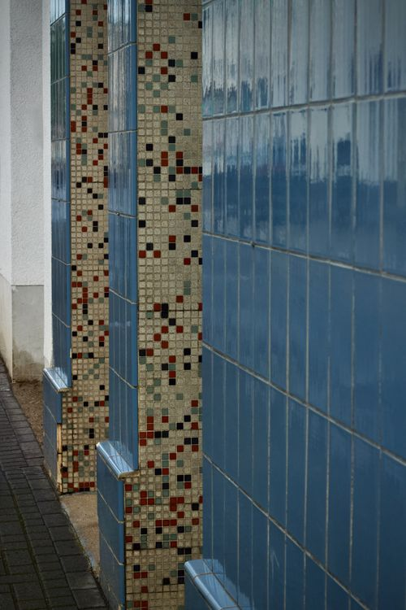
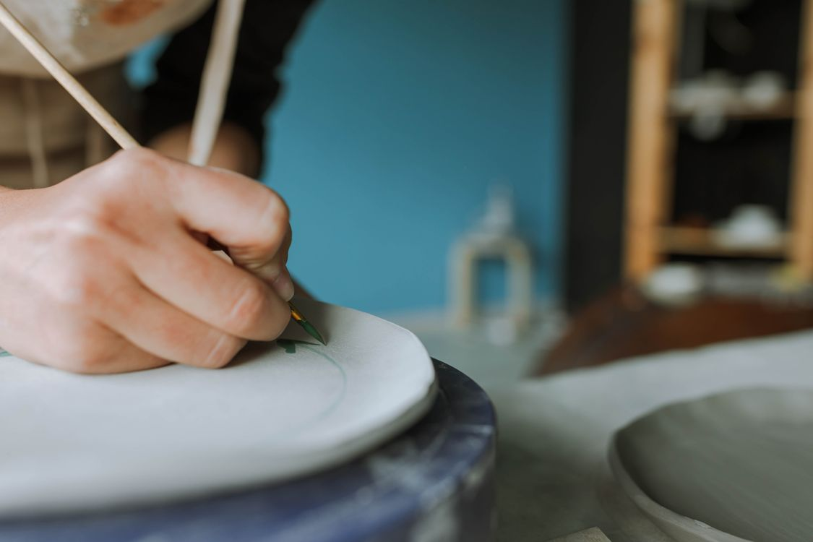

Inês Duarte paints azulejo panels for kitchens, gardens, façades — and for old walls that have lost tiles. Every panel starts as a full-size drawing and one fired sample tile, approved by you before the kiln is loaded. The wall you get is the wall you signed off, at the size you signed it off.
A blue-and-white tile pattern, photographed close (Pexels: Alesia Kozik). Photographs on this site are tile and studio references; the studio's own panels are described in the register below, with their facts.
15 × 15 cmThe standard tile — tin-glazed earthenware, painted in the majolica manner
980 °CGlaze firing. Every tile is fired twice: biscuit, then glaze
44Tiles to the square metre, before cuts and spares
8–12 weeksBespoke panels, from approved drawing to delivery
§ 01 · O explorador — the pattern explorer
Build the panel on the grid first.
Choose a motif, turn it, lay it out at your wall's size. The explorer counts the tiles and prices them from the same rate card printed further down this page. It is an estimate to start a conversation, never a quote — the drawing and the fired sample are where the real decisions happen.
Motif: estrela · drawn at 4 × 3 tiles
Tiles
12
Covers
60 × 45 cm
Area
0.27 m²
Tiles per m²
≈ 44
Estimate at the printed rate€288
Estimate only. The final price follows the approved full-size drawing and the fired sample, and is fixed in writing before the deposit. Spares (2% extra tiles) and the numbered setting-out map are included in every panel price.
§ 02 · Painéis — recent panels, with their facts
The register.
Every panel the studio makes is entered here with the facts a buyer actually asks about: how many tiles, how big, what setting, what state it is in. Three of them are told in full on the Panels page.
Nº 01 · 2026Painel das Andorinhas — the swallow panel
Swallows drawn crossing a plain repeat, for a kitchen wall in Campo de Ourique. A bespoke drawing: the birds were placed against the client's own window light, so the flight crosses the panel left to right, rising. Told in full on the Panels page.
Subject
Swallows over a star repeat
Drawing
Bespoke
Tiles
96
Size
180 × 120 cm
Setting
Interior — private kitchen, Lisbon
Status
Installed
Nº 02 · 2025Horta das Laranjeiras — the orange-grove wall
The catalogue Flor motif with a drawn border of oranges, for a north-facing garden wall in Sintra. Painted on frost-proof stoneware after the wall's earlier industrial tiles spalled in two winters. Told in full on the Panels page.
Subject
Flor repeat, orange border
Drawing
Catalogue, adapted
Tiles
150
Size
225 × 150 cm
Setting
Exterior — garden wall, Sintra
Status
Installed
Nº 03 · 2026Rua das Flores — thirty-four replacements
Replacement tiles for an 1890s façade in Porto that lost 34 tiles to a leaking gutter. The repeat was redrawn from the surviving tiles and the cobalt matched over three test firings. Every new tile is dated on its back. Told in full on the Panels page.

A tiled building wall, photographed close (Pexels: Peter Dyllong) — a reference for façade work. The Rua das Flores wall itself is described on the Panels page.
Subject
Matched singles, 1890s pattern
Drawing
Redrawn from survivors
Tiles
34
Size
Singles, 15 × 15 cm
Setting
Exterior — façade, Porto
Status
Installed
Nº 04 · 2026Painel do Peixe — the café panel
A shoal of sardines over the Onda repeat for a fish café near the Mercado. Bespoke drawing, approved in October; the tiles are painted and the panel fires in December.
Subject
Sardines over a wave repeat
Drawing
Bespoke
Tiles
72
Size
180 × 90 cm
Setting
Interior — café, Lisbon
Status
In production
Nº 05 · 2024Fonte do Pátio — the fountain surround
The Onda motif in Verde Garrafa around a courtyard fountain in Évora — the studio's first exterior panel, and still the one clients ask to copy.
Subject
Wave repeat, green colourway
Drawing
Catalogue
Tiles
64
Size
120 × 120 cm
Setting
Exterior — courtyard, Évora
Status
Installed
“Inês fired one tile first and posted it to us. The swallows on the finished panel are the swallows we approved — nothing drifted, nothing was ‘interpreted’. That sample tile is why we signed.”
Marta Esteves, client for the Painel das Andorinhas (Nº 01, above) — kitchen panel, Campo de Ourique, Lisbon.
§ 03 · Preços — the rate card
Prices, printed in full.
The explorer above works from this table, and so does every written quote. Prices include the tiles, the painting, both firings, 2% spare tiles and a numbered setting-out map. Installation is by your own tiler.
The rate card — November 2026
Work
Rate
Notes
Single tile, catalogue motif
€24
15 × 15 cm; ready in 2–3 weeks
Panel tile, catalogue motif
€24 / tile
€1,056 per m² at 44 tiles
Panel tile, bespoke drawing
€38 / tile
€1,672 per m²; drawing included above 1 m², €120 below
Restoration tile, matched
€46 / tile
Includes palette matching to your surviving tiles
Exterior firing
+ €4 / tile
Frost-proof stoneware body instead of earthenware
Fired sample tile
€55
Credited in full against the panel order
What moves the price
Colours in the drawing. Each colour is a separate painting pass; a four-colour panel takes longer than a two-colour one.
Kiln loads. A panel fires in batches of about 60 tiles; very large panels need more loads, and each load is checked against the sample.
Bespoke drawing time. A new motif is drawn at full size on paper before any tile is touched.
Restoration matching. Some nineteenth-century blues take three test firings to land; the €46 rate assumes two.
Delivery. Collection from the studio is free; crating and freight outside Lisbon are charged at cost.
§ 04 · Como se faz — how a panel is made
Five stages, two approvals.
Nothing is painted at production scale until you have approved the drawing at full size and held a fired tile in your hand. That order of work is the whole studio method.
1
The drawing
The whole panel drawn at full size on paper — every tile, every repeat, the border worked out to the centimetre. You approve the actual size, not a screen mock-up.
2
The sample
One tile painted and fired, then posted to you or approved in the studio. €55, credited in full against the order. If the sample is wrong twice, you can walk away having spent only the sample fee.
3
Approval & deposit
On written approval of drawing and sample, a 40% deposit books the firing slot. The balance is due before dispatch or on collection.
4
Painting & firing
Tiles painted in batches and glaze-fired at 980 °C, each load checked against the approved sample tile under daylight. A tile that drifts is rejected and repainted, not shipped.
5
Setting out & aftercare
The panel travels with a numbered map so your tiler lays it in order, plus 2% spare tiles from the same firing for any future repair.

Painting on tin glaze with a fine brush (Pexels: Anastasia Shuraeva) — a studio reference photograph. Cobalt goes on grey-blue and fires bright; the sample tile exists because of that change.
Start with the wall.
Send a photograph of the wall and its measurements — width and height in centimetres is enough to begin. You will get drawing questions first, not a sales pitch.